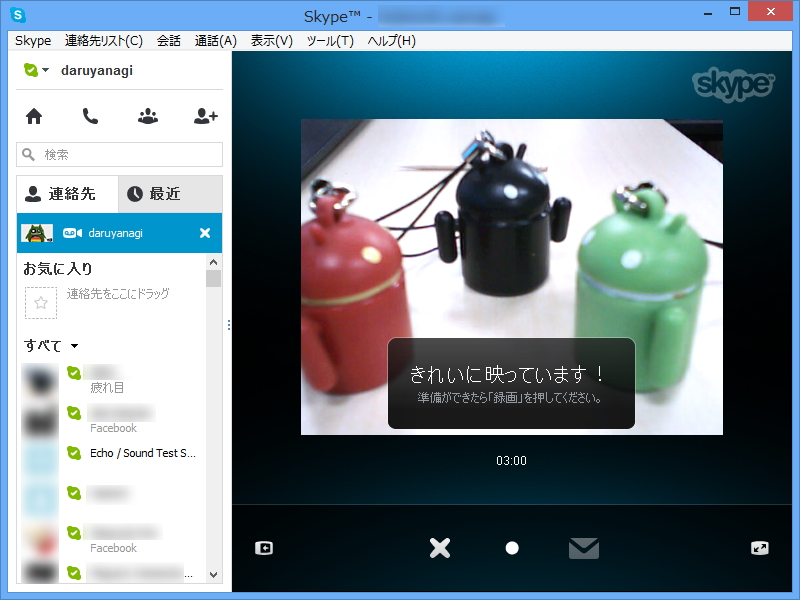
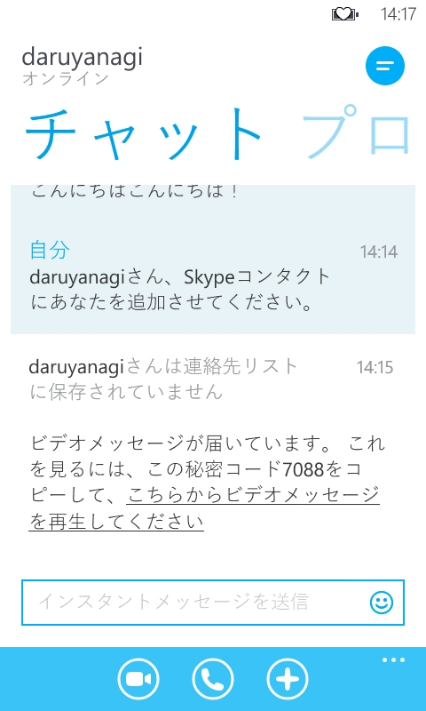

Skype Video Messaging を Windows Phone 7.x で使うとこうなる
公開日：

Skypeは17日、“ビデオメッセージ”機能を正式リリースしたと発表した。本機能は、これまでテストを目的としたプレビュー版として提供されていた。
Skype、ビデオメッセージ機能を正式リリース - 窓の杜 URL @madonomoriさんから WindowsPhoneは・・・

Windows Phone ね！ ボクも大好きさ。だから、もちろん試してあるんだ。
記事にも書いてある通り、正式サポートされていない端末ではブラウザーを利用したビデオメッセージの再生が可能。リンクとパスコードが送られてくるので、それを開けばいい……
はずなんだけど！ いつまで経っても再生されない。
ちなみに日本で合法的に利用できる Windows Phone 7.x 端末*1で利用できる Skype の最新版は、1.3.0.0 だ。Windows Phone 8 の場合は、 2.6.0.148。とてもうらやましいですね。
最近 Windows Phone 7.x のサポートがないアプリが増えてきていて、もう終わりなんだなぁ、と感じさせられる*2。